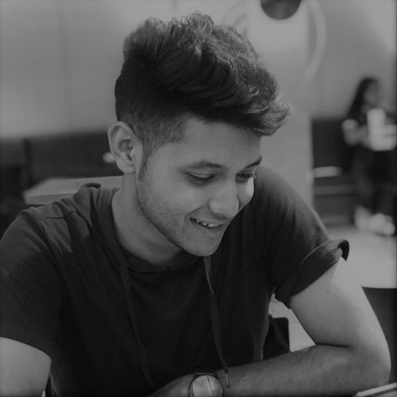

A short autobiography
Hello and thank you so much for visiting my page. My name is Ashiqul Islam, an Information Technology alumni of International Islamic University Malaysia(IIUM). I am a confident, self-starter individual with superb problem-solving skills, data visualization skills, communication skills, and an in-depth understanding of data structure with a team-driven attitude. During my time at IIUM, I designed and created a Knowledge Management Project with strict timelines, which earned me a spot on the top 10 list at my university. I was also an active member of the Hult Prize Foundation, where I along with my team organized the campus program for the community.
I have worked in various industries previously prior to completing my bachelors. I have gained experience as an IT administrator at Fraser Place Kuala Lumpur, a 4-star hotel based in Malaysia. Where I worked as an intern IT officer to maintain hotel systems and services. During my bachelor's, I worked as an Intern where I was responsible for procuring FMCG industry suppliers for a startup supply chain company called Lapasar and promoting certain products according to my sales analysis. Additionally, prior to starting my diploma, I worked full-time at the Bangladesh Embassy in Riyadh for 2 months, working within the economic sector. This gave me a working knowledge of everyday office tasks and challenges faced in an office environment. Despite having worked in multiple industries and dealing with a variety of language and professional hurdles, I like to think these obstacles make life much more exciting in the workplace, where we get to learn something new every day. Added to this, I am also currently pursuing my certification in AWS as a Cloud Practitioner.
The projects that I have displayed in my portfolio are my passion projects with data, utilizing the resources of SQL, Tableau, Power BI, Excel and Python. I have an understanding that I would like to convey that knowledge alone does not bring success, we have to blend it with drive, persistence, and goal to achieve success. I would like to thank you again for visiting my portfolio.